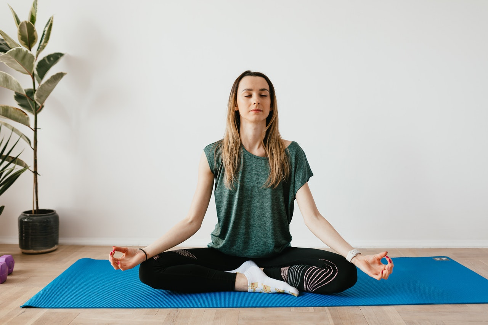

I will be success

Miss karina chowdhury
Senior Journalist
It is true that success is depend on some essential element. Such as well plan, displine, determined, self-confident,hardworking and regular work. It is undoubtedly true that who are lead successful life in the earth they also maintain always discipline, well plan, self-confident, hardworking and regular excercise. Without these element success and successful life lead is not possible in the world.
Journalism is the very prestigious profession in the world. But is depend on proper activities and actual interest of mass people and country.
A successful journalist always find out social problem. For example: social discrimination, corruption, prejudice and other. Who are successful journalist they also always study in different matter and they nock different source stock for gathereing knowledge.
It popular word that a journalist always represent mass people and they always focus not only varities unequality of the society in different things, they also present solution of the problem to the authority. It is also true that mass people of the society can be encourage through good news by the journalist. But sometimes in different countries profession of journalims is face different type threat. For example: during war, fascist and corrupted government always challeng for effective journalism in the worldwide. At present Bangladesh is the best example of this profession.
How to continue our practice.

Miss jannatul karim
Clinical Psychologist
It is common matter that if you want to success in your life practice continiously is very important, without continue practice you will not be success at all in every work.
Nowadays undersating human mind is very necessary for making better relationship with other. Because of human mind variation person to person. It common word that there are human there are mind and it is also popular word that many man many mind.
It is reality that the worldwide scientist there is no found specific definition of mind of man. But, absolutely true that mind very powerful than body. It someone effectively utilize his mind power the obviously achieve his success. There is no doubt about the matter.
In this circumstances is easily say that clinical psychology is very helpful for reading a man mind tendency and understand his problem. A dedicated clinical psychologist keep contribution in different for the society and the country. Even for world wide citizen.
Reduce all pressure
Miss Katherine lorenge
Trainer of Yoga
At present world. As a world citizen we are very busy. Because of competition and struggle for existence for better life and increasing your better situation. Thats why we always busy for making strategy and our work. As a result we face everyday new pressure in our work. It makes nerw problem. For example mental pressure and different types of diseases. Such as tension, depression, hypertension, diabetes and other.
As a human being we are slave of habitation. If we start practice regularly as our habit then once upon a we will be habitate this work. For this reason all discipline force in all country always emphasize on regular practice and work.
It may be official or non-official. It is obviously true that practice makes a man perfect. If you practice regularly in any work then ypu will be expert once upon a time of after several time you will gain best feedback from the work.
Now the question is that how we will overcome all the barrier in better healthy life. There is no doubt life is not bed of roses for all. Some people are very lucky in the earth but most of the people in our surrounding area are very poor and unhappy.